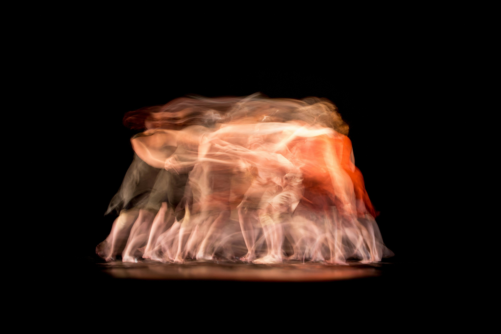

Photo by Noah Buscher on Unsplash
Here is a fun and equally disturbing fact: You have never seen your face and its guaranteed that you will never be able to see it. Yes, there is a case to be made about mirror images and photos but those are reflections. Reflections are the closest we can get to seeing how we look but they never fully capture what the eyes can see. This fun fact would be entertaining if faces weren’t so important. Whether we like it or not, we are wired to judge books by the cover and the face is a major part of that cover. At any point in time, we have no idea what our face looks like or how we are perceived. So we go about our lives, essentially blind.
Photo by Finan Akbar on Unsplash
This is a why we have an overlooked yet fundamental human need; the need to be observed, to live in public. It sounds silly because it feels like a waste of time for both the oserver and observed. Both parties can exist independently, especially the observers who rarely feel the need for attention. I’m an observer and more often than not I fantasize about living a quiet life, far away from civilization. Every time I’ve lived it out, I return with a new found appreciation for public eyes. While not all of us are attention seekers, we all crave the spotlight to some degree. To our merit, living in public has its benefits.
Being observed puts us on our best behaviour. Its why you are more productive working from the office, coffee shops and other public spaces. Also why you put your best foot forward if your work will be peer-reviewed. Even if no-one is watching, the possibility that they might is enough motivation. Public eyes adds a level of feedback and accountability that willpower can’t replicate.

Moreover, living in public puts you on people’s minds which can be a good thing. It builds empathy; people are likely to be on your side if they feel like they know you. Its how the whole celebrity/influencer ecosystem works. Those seemingly mundane details they share prime us to be on their side, to buy whatever they are promoting. On the other end of the spectrum is animosity towards people we know little about. At the root of all wars is lack of empathy because the parties haven’t had a chance to observe and humanize each other.
In addition to that, living in public brings out personas that wouldn’t exist otherwise. Living in public adds an another dimension to living: perception. We present different versions of ourselves depending on who is watching. It doesn’t mean that we are fake, we are just presenting relevant parts of ourselves. Your work persona is different from your home persona which is also different from your private persona. Your identity is the sum of these personas and variety tends to infuse vibrancy to life. Take it all away and you get something resembling solitary confinement; lifeless, indifferent.

Photo by Ahmad Odeh on UnsplashWith all its goodness, living in public comes with a cost, a certain slowness that is invisible to the naked eye. It adds a new dimension to the anything you’re trying to accomplish. You not only have to do the thing, you have to socialize it, let others observe it, wait for them to internalize it, debate it, collect feedback, incorporate feedback, and then move forward. There is a lot of hoping and waiting around. The larger the audience the slower it gets. Like the saying goes, “If you want to go fast, go alone, …”.
Photo by Scarlett Alt on Unsplash
For introverts and extroverts, living through the pandemic was harder due to lack of public spaces. We were denied the opportunity to present our public personas and be observed. We need to be observed, maybe not all the time, but sometimes. It is fundamental to building connections and living a fulfilled life; the catch is it comes with a side of inefficiency. Its always uncertainity if this cost is worth it but with the right audience, it ussually is.